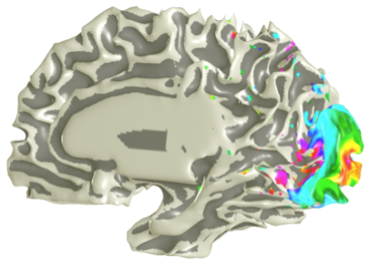

About me
I'm a Post-Doc working on blood flow in the brain. My specific interests involve trying to uncover the properties of the spatiotemporal nature of the blood flow response. My main focus is how such changes appear in measures of blood flow and oxygenation, namely in the BOLD (Blood--oxygen-level dependent) response, measured in fMRI (functional Magnetic Resonance Imaging).

Currently my research interest is in the field of theoretical biology, namely within the field of theoretical neuroscience. My PhD was on the spatiotemporal dynamics of the Blood oxygenated-level dependent signal, measured with fMRI. In this field there is little attention paid to the spatiotemporal nature of blood flow in the cortex. My work strives to uncover the spatial nature of blood flow by building a theoretical model and testing this through highly resolved fMRI in humans.
From a physics point of view: a way to tackle this is to use a mean-field approximation of the underlying cortical vasculature. This involves averaging over the dense vessels, then treating cortical tissue as a porous structure. In this framework the vessels penetrate cortical tissue which form the pores of the system. Applying physical laws to this system we derived our spatiotemporal model for hemodynamics.